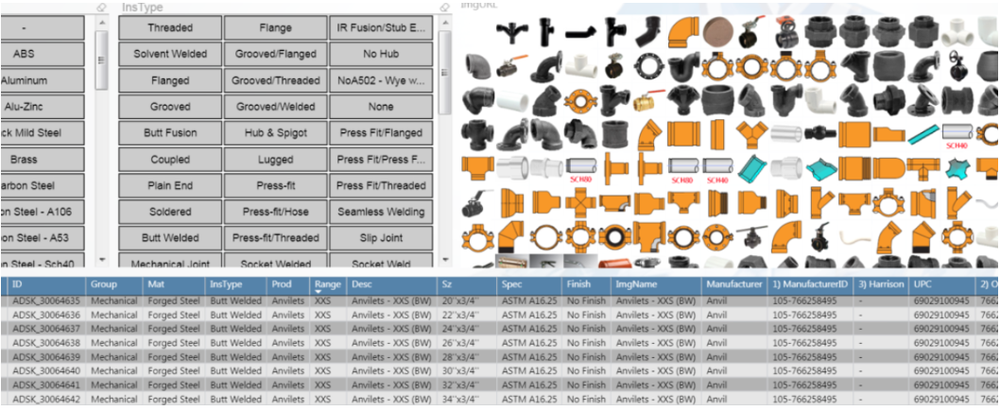
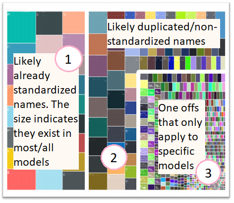

Data Visualization is one of my newest skills I am working on currently. Some of you may know that I recently completed a Coursera course called Data Visualization and Communication with Tableau.
I did this because I found a spark of joy from mixing data analysis, creativity, and communication all into one.
How does it relate to what I’m currently doing now in my career? Good question.
CAD management did not inherently start out as data management and data visualization for me, but it sort of evolved into it. Why? Because there are so many files that hold a lot of data within them. Historically, I have had to open them up side by side to visually compare. Doing things like that just doesn’t cut it anymore, especially when it comes to BIM content and data management in projects. I strongly believe that “data driven” and “data informed” decisions are more important than ever.
Data Visualization at Autodesk University
In November 2019, I took multiple classes on getting data out of files and into Microsoft Power BI dashboards. One of my favorite examples was this class that showed how to create a Power BI dashboard that displayed pictures, product information, and more from an Autodesk Fabrication CADmep database. Here is more information regarding how it works.
 Image retrieved from Darren Young’s website
Live interactive dashboard by Tyler Phillips
With a little elbow grease, you could set up a data visualization that would provide insight all in one place. This is great for multiple audiences, especially those who do not have the design software installed but are interested from a management standpoint.
Those of you who have attended Autodesk University know that the experience is basically like drinking from a fire hose with the plethora of information available. With that in mind, I took data classes like they were M&Ms.
I used just about any free moment I could in Las Vegas to create my own Microsoft Power BI dashboard for analyzing Fabrication CADmep content before I left. I knew it might be a while before I could get back to it at the office (and I was right).
My own use of Microsoft Power BI
I would be remiss if I didn’t mention my own uses of Microsoft Power BI dashboards. While the nature of my work is often non-public and/or confidential to be able to show specifics, I can say that one of my most prominent uses that I think anyone can relate to is CAD and BIM content standards with naming conventions.
If there is a lot of BIM content available and several attributes that were never standardized over time, then it creates a nightmare of similar yet different names. Think like Revit parameter names, naming of families, etc.Non-standardized naming conventions can make things hard to find and use in projects. And when things are hard to find, it creates potential for non-value added duplicates, rework, and otherwise waste.
Data Visualization Example: Microsoft Power BI Tree Map
That’s where a Microsoft Power BI tree map chart comes to the rescue. Once I extracted and prepared all the data from all the Revit families, I was able to load it into Power BI.
Here is an example of what that could look like in a general visual sense. I broke it down into three main sections:

Larger rectangles to show that more of certain property names existed in most/all the data. Standardization likely already exists here.
Slightly smaller rectangles show that there are duplicated/similar names being used. For example, “Item #” and “Item Number” might be used interchangeably in the entire BIM portfolio and could benefit from normalizing the data to just show one of those.
These are considered one offs for the most part. They are usually names of things that likely only apply to a few Revit families and not much else. For example, a radiant manifold might have some other named attributes compared to a ball valve because they are totally different things. There might be some exceptions to this, of course, but for the most part I am most concerned with the second section when it comes to standards in BIM content.
From here I can do a few pie charts to decide on what to do in specific instances if the goal is simply to standardize. The pie chart would show which name occurs most often as part of a proportion.
The Takeaway
Sure, I could have tallied up numbers in a spreadsheet, but the tree map provided additional insight. The additional insight came from the visualization itself because it told a story. In this way I was able to use Microsoft Power BI to help make informed decisions on standardization.
Keep in mind that this application is for exploration and maintenance of existing content. It could even apply if you acquire content over time across collaborative teams. If you have perfectly standardized BIM content at all times forevermore, then just scroll on :).
Sources:
Phillips, T. (2019). Navigating Fabrication BIM Content with PowerBi. [online] Available at: https://www.linkedin.com/pulse/navigating-fabrication-bim-content-powerbi-tyler-phillips/ [Accessed 27 Dec. 2019].
Young, D. (2019). Microsoft PowerBI w/Autodesk Fabrication – BIM there. Done that.. [online] BIM there. Done that. Available at: http://www.darrenjyoung.com/2019/03/16/microsoft-powerbi-w-autodesk-fabrication/ [Accessed 27 Dec. 2019].